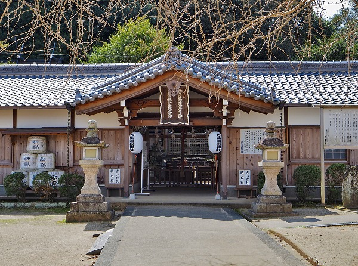
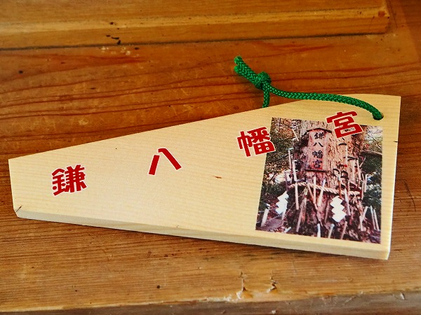

鎌八幡。
ここは
神木に鎌を打ち付けるという変わった習俗がある事は以前お伝えした事と思う。
（前回のレポートは
こちら）
その衝撃度は拙著「奉納百景」の表紙に使わせていただいたほどだ。
 奉納百景。お買い漏らしなきよう。
奉納百景。お買い漏らしなきよう。
しかし最近この鎌奉納習俗に
新たな展開があったとの噂を聞きつけ久し振りに出向いてみる事にした。
向かったのは和歌山県かつらぎ町。

にある
丹生酒殿神社。
詳しくは
前回のレポートを読んでください。
その裏手に鎌八幡はある。
のだが、様子が変。
拝殿に看板が。
鎌八幡宮では、平成二十九年度よりご神木保護の為に、
ご祈願の鎌をこれ以上打たない事と、いたしました
ガビーン！
鎌、打てないんだ。

代わりにこの鎌型絵馬を奉納する事になったらしい。
で、肝心の御神木はというと…
確かに新しい鎌は打ち込まれておらず。
持ち手が黒ずんだ古い鎌ばかりで
以前に比べてボリュームも減った様子だ。
根本を見ると、新しい鎌が置いてある。
やはり鎌型の絵馬では
納まりきれない何かがあるのだろう。
悪い運との縁切りを祈願している鎌。
どうしても鎌＝縁切りをイメージしがちだ。
しかし以前も触れたがこの鎌八幡は
縁切りを祈願する場所ではない。
看板にあった
「不適切な祈祷詞は除去します」というのは縁切りにまつわる奉納を避けるこの神社サイドの意思表示だ。
柄も取れて金属の鎌先だけが木にめり込む。
数は少なくなったとはいえ中々壮絶な光景である。
かなり木に吞み込まれている。
満願成就は間近ですな。
いくら大木といえどこれだけ鎌が打ち込まれたら木も堪ったもんじゃあない。
鎌打ちしない、という判断も致し方あるまい。

かなり大きな鎌も打ち込まれていた。
しかも結構上の方に。
その時、強烈な木漏れ日が射してきた。
余りの神々しさに霊感とかない私でもチョット感動しちゃいましたよ。ありがたや。ありがたや。
さて。
今回の本題はここからです。
先程紹介した鎌八幡宮、実は2代目の御神木なのだ。
とはいえ同じ場所にあった初代が枯れちゃったから植え替えて、という訳ではなく、元々別の場所に御神木があったというのだ。
わけあって明治42年に現在の丹生酒殿神社の境内に合祀されたのだが、それまでは1キロほど西の
兄井という在にある木が鎌八幡とされていたのだ。
江戸時代に刊行された紀伊国名所図会や紀伊続風土記などにも兄井の鎌八幡の記述がある。
（紀伊国名所図会より）
それによれば、鎌が大量に打たれており、中には
1回に千挺も打つ強者もあったという。
千って、打ちすぎだろ…どんな願い事してるんだ。
成程、当時の絵を見ると鎌先が隙間なく打たれて
原木キノコみたいになっちゃってるよ。
そこに更に鎌を打とうとする若い衆。
左端には上を向いて鎌を投げようとしている輩がいる。
この頃から
江戸の人々の欲望を満たすスポットとして人気があったことが良く判る。
で、現在、元鎌八幡宮はどうなっているのか、折角なので行ってみる事にした。
人里からは離れた場所。
諏訪明神社の境内に
元鎌八幡はあった。
明治末に遷したというが、ごく最近造られた石碑が建っていた。
つまりここはここで鎌八幡として今でも機能している、という事なのか？
境内はごくごくシンプルで手前に諏訪社、奥に鎌八幡宮がある。
諏訪社は簡単な門と小さな社だけだった。
で、鎌八幡宮。
こちらも簡素な門だけで、社はない。
あくまでも御神木がメイン、というスタンスである。
これは丹生酒殿神社の鎌八幡と同じスタイルだ。
その先に御神木がある。

明治に遷されたというが、
こちらの木にもたくさんの鎌が打ちつけられていた。
見れば丹生酒殿神社の鎌八幡よりも
新しい鎌が打たれているではないか！
何故遷座が済んだ古い神木に新しい鎌が打たれているのか？
いつもながら想像力を10倍に拡張して考えてみる。
恐らく直接の原因は丹生酒殿神社の鎌八幡での鎌打ち禁止令によるものだろう。
①丹生酒殿神社で鎌が打てなくなった。
②どうしよう。鎌を打たねば願いが叶わない。
③そういえば、兄井にも旧鎌八幡があるじゃないの。
④よし、行ってみるか。
⑤おおっとお。みんな打ち込んでるじゃん！
⑥では私も遠慮なく打ち込ませてもらいますよ、っとお。
ブスッ！
…てな具合に皆さん
制限のない旧鎌八幡の方に鎌を打ち込むようになったのではないだろうか。
結局のところ、
みんな打ち込みたいのだ。鎌を。
こちらの木にもかなり高いところに鎌が打たれていた。
ところで。
根本的な疑問に立ち返る。
何故、木に鎌を打つのだろう？
それについては前回のレポートで丹生酒殿神社が金属系の神様だからではなかろうか、という仮説を立てた。
しかし明治末に遷座したのであればその仮説は成立しない。
むしろ着目すべきは兄井にある旧鎌八幡が
諏訪明神社の中にある、という事だ。
諏訪神社といえば、長野県の諏訪にある諏訪大社が本社である。
その諏訪大社では有名な御柱祭の折、御柱を定める際に
山の中の木に薙鎌という鎌を打ち、その行為によって山中の木を御神木と定めるとある。
つまり木に鎌を打つという行為は単なる木に神性を付与させるために行う儀式なのだ。
この兄井の鎌八幡でも
諏訪信仰の影響で木に鎌を打つ行為がいつしか庶民の祈願の形に変化していったのではないだろうか。
ここでもまた強烈な日差しが差してきた。
きっと神様が「御名答！」と仰ってくれたのだ、と思いたい。